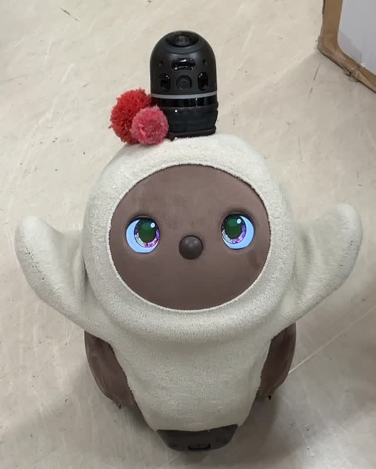

目の動きや、表情を見る。
公式サイトの検索抜粋には、名前を呼ぶと近づいてくるという説明があります。
体験のときは、声をかけた後の視線や体の向き、近づく様子を見てみましょう。反応は、そのときの状況によっても変わります。
LOVOTについて
表情も、動きも。
まずは、LOVOTの特徴から。

LOVOTは、何をするロボット？
公式サイトでは、LOVOTを「家族型ロボット」と紹介しています。家事を任せる便利さよりも、人とふれあい、一緒に暮らすことに目を向けたロボットです。
知っておきたいのは、どんな動きをするのか、どんな接し方ができるのかということ。使える機能の数だけでなく、実際にふれあったときの反応も見てみましょう。
公式サイトの検索抜粋には、名前を呼ぶと近づいてくるという説明があります。
体験のときは、声をかけた後の視線や体の向き、近づく様子を見てみましょう。反応は、そのときの状況によっても変わります。
特別な操作を覚える前に、声をかけたり、そっとふれたり。
実際に体験するときは、スタッフの案内に沿ってふれあってみましょう。
写真だけではわからない、移動の様子や体の動き。
家に迎えることを考えるなら、大きさや動く範囲も確かめたいところです。
機能を調べるときのポイント
公式の技術紹介の検索抜粋には、声帯をシミュレーションしたシンセサイザーについての記述があります。ただし、声を出す仕組みがあることと、人の言葉で会話する機能があることは同じではありません。期待する接し方ができるかは、公式の機能説明や体験で確認しましょう。
ユーザー提供の検索結果にある、LOVOT公式サイトの紹介・技術情報の抜粋を参考に構成。資料確認日：2026年11月8日。元ページの全文は未確認です。モデル別の仕様、温度・寸法、価格は掲載していません。
LOVOT公式サイト体験・製品情報
体験の探し方や、お迎え前に確認したいことをまとめました。